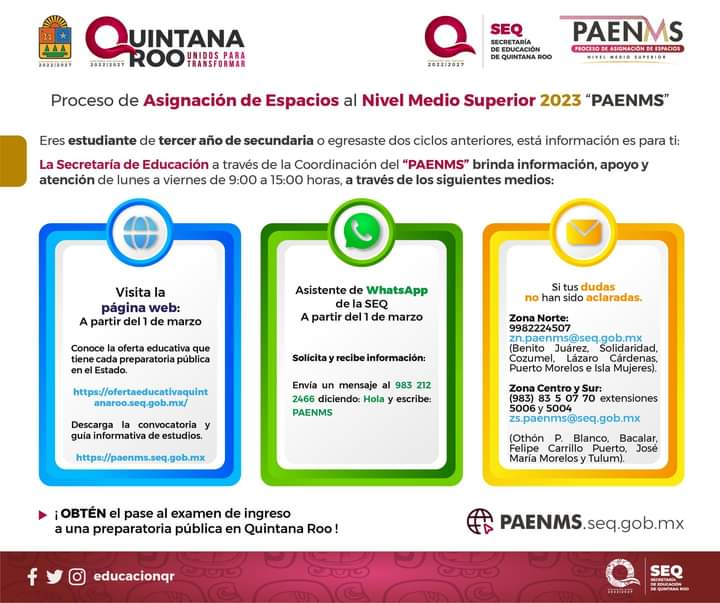
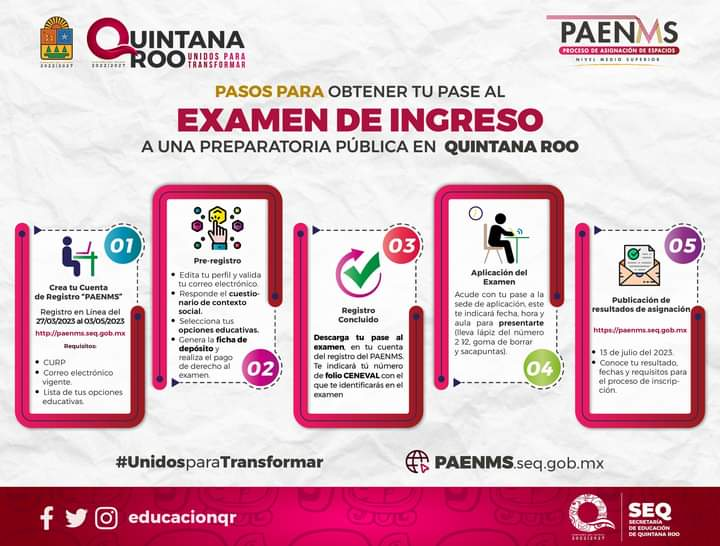

COLEGIO DE BACHILLERES CANCUN PLANTEL 2

La gestación del Colegio de Bachilleres de Quintana Roo, se remonta a la Escuela Particular Incorporada Hidalgo, en la ciudad de Chetumal, capital del Estado de Quintana Roo, en donde religiosas impartían educaci oacuten primaria y secundaria y por las tardes ofrecían clases de preparatoria.
MODALIDADES EDUCATIVAS
APOYAR ES DE NUESTROS MAYORES ATRIBUTOS MAS A LOS CHICOS QUE NOS DEMUESTRAN QUE QUIEREN SALIR A DELANTE, CONFIA EN NUESTRO INSTITUTO, CONFIA EN TI, COMO NOSOTROS LO HACEMOS
"Ofrecemos estudios de bachillerato general a la juventud quintanarroense en la modalidad escolarizada en los Planteles y Centros EMSaD, siendo la finalidad esencial del Bachillerato General el estudiado en el desarrollo de una primera síntesis personal y social que le permita su acceso a la educación superior, a la vez que le dé una comprensión de su sociedad y de su tiempo y lo prepare para su posible incorporación al trabajo productivo"
Convocatoria del Proceso de Asignación de Espacios al Nivel Medio Superior 2023 Quintana Roo
La SEQ CONVOCA a todas las interesadas y todos los interesados en iniciar sus estudios de Educación Media Superior en los planteles públicos del estado de Quintana Roo en las modalidades del sistema escolarizado y prepa modular, a participar en el PAENMS 2023.
Ingresa a paenms y consulta las bases. ⏰El periodo de registro de aspirantes en la plataforma será del 𝟮𝟳 𝗱𝗲 𝗺𝗮𝗿𝘇𝗼 𝗮𝗹 𝟯 𝗱𝗲 𝗺𝗮𝘆𝗼. ¡𝗥𝗲𝗴𝗶́𝘀𝘁𝗿𝗮𝘁𝗲 𝘆 𝗼𝗯𝘁𝗲́𝗻 𝘁𝘂 𝗽𝗮𝘀𝗲 𝗮𝗹 𝗲𝘅𝗮𝗺𝗲𝗻!
También encontrarás información de la oferta educativa de Educación Media Superior en Quintana Roo.

